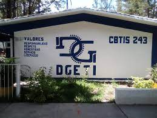

Msion
Formar personas con conocimientos Tecnologicos en las areas industrial,comercial y de servicios, a traves de la preparacion de bachilleres y profesionales tecnicos, con el fin de contribuir al desarrollo sustentable del pais.
Vision
Ser una institucion de Educacion Media Superior,certificada, orientada al aprendisaje y el desarrollo de conocimientos Tecnologicos y Humanisticos.
Redes Sociales
El CBTis 243 es una institucion publica.
Tiene una duracion de estudio de tres años.
Modalidad:
Educación Escolarizada: Esta modalidad es una formación bivalente, por una parte se egresa con una carrera técnica con los conocimientos, habilidades y destrezas para integrarse al sector productivo como técnico profesional y por otra parte ofrece al egresado la posibilidad de continuar sus estudios del nivel superior.
Ventajas que ofrese esta modalidad:
1.-Las materias propedéuticas que se cursan son prácticamente las mismas que en el bachillerato general, por lo que se prepara para estudiar una carrera profesional del nivel superior.
2.-El plan de estudios incluye módulos para la formación tecnológica que te preparan como técnico del nivel medio superior en algunas de las carreras técnicas que se ofertan.
3.-Al concluir cada módulo, los estudiantes reciben un certificado.
4.-.Estos certificados se plantean como “salidas laterales”, que permiten que los estudiantes tengan reconocimiento por sus estudios, aun cuando el estudiante no complete todo el plan de estudios del nivel medio superior.
Plan de estudios:
1.-Está organizado en seis semestres e integrados por asignaturas y módulos que están distribuidos en tres componentes de formación: básica, propedéutica y profesional cubriendo un total de 2800 horas por semestre en 16 semanas y un trabajo promedio de 30 horas de trabajo académico por semana.
2.-El componente de formación básica con 1200 horas: se articula con la educación básica y con la de tipo superior, aborda los conocimientos esenciales de la ciencia, la tecnología y las humanidades, aporta fundamentos a la formación propedéutica y a la profesional y está integrado por asignaturas.
3.-Se distribuyen en cuatro campos de conocimiento, como son 1 Matemáticas, 2 Ciencias naturales, 3 Comunicación, 4 Humanidades, 5 Historia, sociedad y tecnología.
4.-El componente de formación propedéutica con 480 horas: se articula con la educación superior, pone énfasis en una profundización de los conocimientos disciplinares que favorezca una mejor incorporación de los egresados a instituciones de ese tipo educativo y está integrado por asignaturas.
5.-Se organiza en tres áreas que permiten la convergencia e integración de los saberes previamente adquiridos: Físico –matemática; Químico – biológica y Económico – administrativa. (Sus seis asignaturas se ubican en el 5º y 6º Semestres, tres de ellas son comunes para las tres áreas, dos más son específicas para cada área y la última es elegida por el estudiante de acuerdo con la oferta del plantel.
6.-El componente de formación profesional con 1200 horas: es la formación tecnológica se da a partir del segundo semestre, te preparan como técnico del nivel medio superior, se organiza en carreras estructuradas en módulos para desarrollar las competencias profesionales correspondientes al campo de formación profesional de la carrera técnica elegida.

Calle central poniente S/N Barrio San Francisco C.P 30900 (telefono y fax: 962-64-10262)
e-mail institucional: cbtis243.dir@uemstis.sems.gob.mx